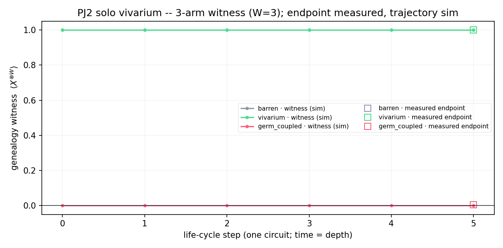

A single proto-viral organism, enriched off the 2018 paper's own roadmap (more degrees of freedom in the genotype/phenotype; spatial variables; trace-out of dead units; error correction only in the genotype qubits), running its whole life in one quantum circuit — no frames. ▶ open the live spectacle
The organism has an immortal germ line (a W-generation GHZ genealogy carrying the certified
witness ⟨X^⊗W⟩) plus a small register of classical genes (role / repl / life). The
genes express a mortal body — a walker on a habitat lattice seeded with food. Under one
fixed local vivarium Hamiltonian the body forages, eats on co-location, buds when
fed, and ages toward |0⟩ via a bath; the fed are then revived. Survival of the fittest is an
emergent outcome of those laws — never a scripted cull, never an if(ate) branch.
barren and vivarium arms run
the identical circuit law; they differ only in whether food is seeded. Foraging, eating, budding
and starvation appear only where food exists — behaviour emerges from the habitat, not from code
(verified statically: barren == vivarium − food seed).germ→soma expression is present (the body is built from the genes; the paper's gene→body information is itself classical), while soma→germ back-action is forbidden (no coherent gate couples a witness locus to the mortal body). The quantum claim lives in the cross-generation genealogical entanglement, never the within-individual gene→body link.
| arm | witness ⟨X⊗3⟩ | population (alive body) | food left | verdict |
|---|---|---|---|---|
| barren (empty habitat) | +1.000 | 0.41 | 0.00 | witness survives; body starves |
| vivarium (with food) | +1.000 | 0.87 | 1.64 | witness survives; fed body thrives |
| germ_coupled (wrong wiring, A/B) | +0.006 | 1.23 | 1.63 | witness collapses |
Two things at once: the fed organism's population (0.87) is ~2× the starved one's (0.41) —
survival of the fittest, emergent — and the germ witness stays certified (+1.000) through the
whole enriched life cycle. Only the deliberately mis-wired germ_coupled arm — the body
soldered into a gene qubit — collapses the genealogy (+0.006), proving the barrier is the mechanism.

Only ⟨X^⊗W⟩ over the germ line is the quantum claim; body occupancy, energy,
population, food-remaining and the genes are diagonal (classically reproducible) narrative (CD-3/CD-4).
The animation is a statevector reconstruction of the one measured circuit; the certified numbers are the
single measured endpoint. No quantum speedup is claimed — this is scale · faithfulness · certification.
The live W=12 / track=6 Heron-r2 run (≈30 qubits) is the developer's; sim is small so the whole life
fits a statevector.